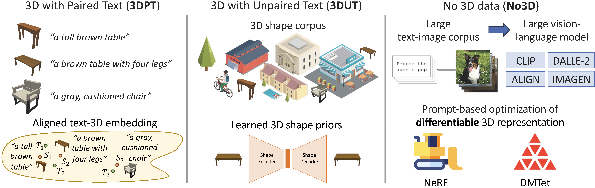
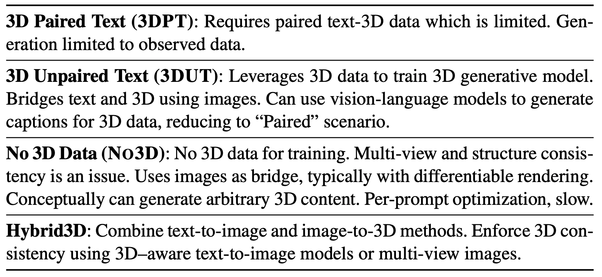
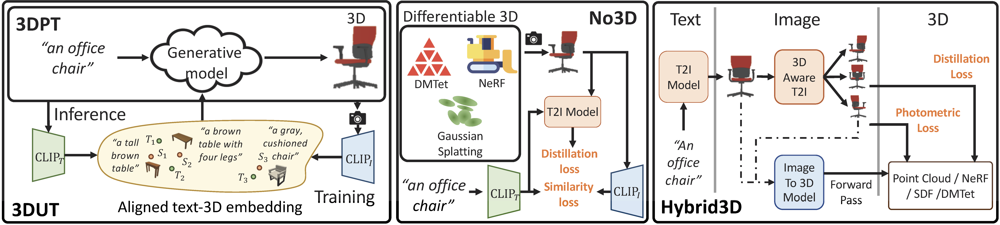
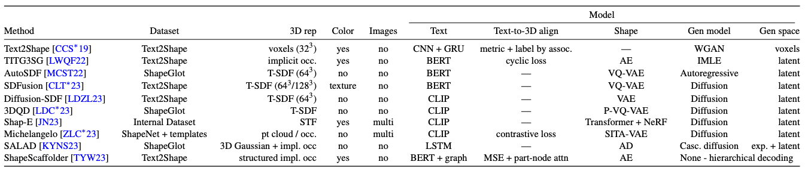
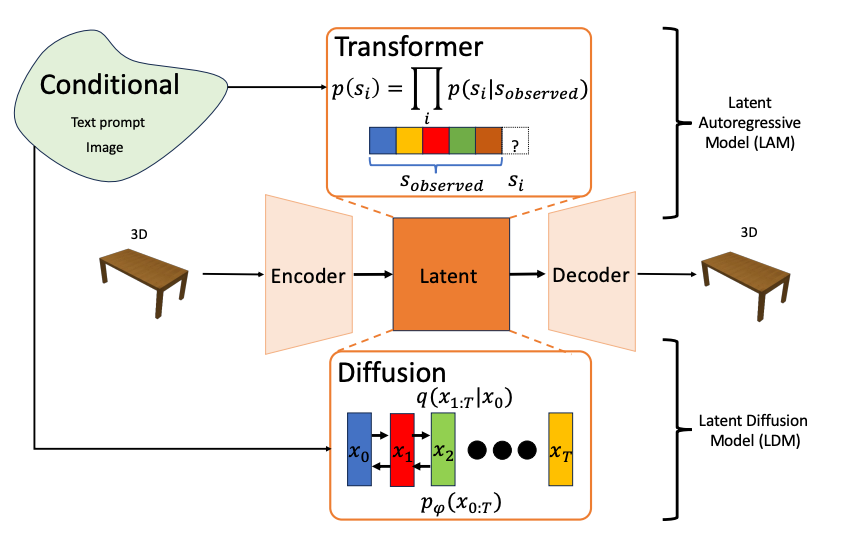
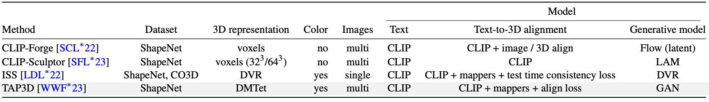
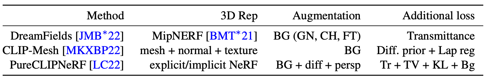
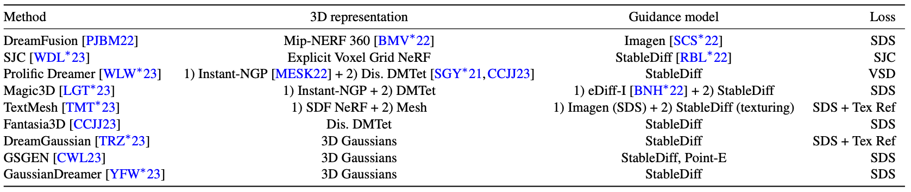
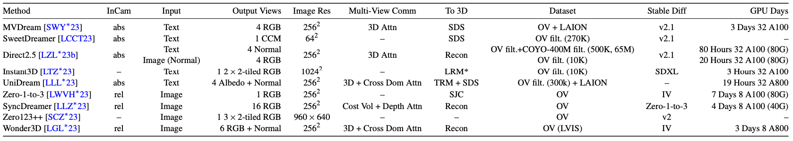

Text-to-3D Shape Generation Paper List
Eurographics STAR 2024
Han-Hung Lee1, Manolis Savva1 and Angel Xuan Chang1,2
1 Simon Fraser University 2 Canada-CIFAR AI Chair, Amii


Abstract
Recent years have seen an explosion of work and interest in text-to-3D shape generation. Much of the progress is driven by advances in 3D representations, large-scale pretraining and representation learning for text and image data enabling generative AI models, and differentiable rendering. Computational systems that can perform text-to-3D shape generation have captivated the popular imagination as they enable non-expert users to easily create 3D content directly from text. However, there are still many limitations and challenges remaining in this problem space. In this state-of-the-art report, we provide a survey of the underlying technology and methods enabling text-to-3D shape generation to summarize the background literature. We then derive a systematic categorization of recent work on text-to-3D shape generation based on the type of supervision data required. Finally, we discuss limitations of the existing categories of methods, and delineate promising directions for future work.
We list the commonly used datasets used to train these methods here.
The methods are divided into four families as shown in the table below, namely: 1) Paired Text to 3D (3DPT); 2) Unpaired 3D Data (3DUT); 3) Text-to-3D without 3D data (NO3D); and 4) Hybrid3D.

Finally, we include works focused on generating multi-object 3D scenes, editing of 3D shapes and evaluation of text-to-3d methods.
Datasets
3D
- ShapeNet: An Information-Rich 3D Model Repository,
Chang et al., Arxiv 2015
Website - ABO: Dataset and Benchmarks for Real-World 3D Object Understanding,
Collins et al., CVPR 2022
Website - Objaverse: A Universe of Annotated 3D Objects,
Deitke et al., CVPR 2023
Website - Objaverse-XL: A Universe of 10M+ 3D Objects,
Deitke et al., NeurIPS 2023
Website
Text-3D
- Text2Shape: Generating Shapes from Natural Language by Learning Joint Embeddings,
Chen et al., Arxiv 2018

- ShapeGlot: Learning Language for Shape Differentiation,
Achlioptas et al., ICCV 2019
- ShapeTalk: A Language Dataset and Framework for 3D Shape Edits and Deformations,
Achlioptas et al., CVPR 2023
- OpenShape: Scaling Up 3D Shape Representation Towards Open-World Understanding,
Liu et al.,NeurIPS 2023
- Scalable 3D Captioning with Pretrained Models,
Luo et al., NeurIPS 2023

Paired Text to 3D (3DPT)

- Text2Shape: Generating Shapes from Natural Language by Learning Joint Embeddings,
Chen et al., Arxiv 2018
- Towards Implicit Text-Guided 3D Shape Generation,
Liu et al., CVPR 2022

Autoregressive Prior
- AutoSDF: Shape Priors for 3D Completion, Reconstruction and Generation,
Mittal et al., CVPR 2022
- ShapeCrafter: A Recursive Text-Conditioned 3D Shape Generation Model,
Fu et al., NeurIPS 2022
Diffusion Prior
- SDFusion: Multimodal 3D Shape Completion, Reconstruction, and Generation,
Cheng et al., CVPR 2023
- Diffusion-SDF: Text-to-Shape via Voxelized Diffusion
Li et al., CVPR 2023,
- 3DQD: Generalized Deep 3D Shape Prior via Part-Discretized Diffusion Process,
Li et al., CVPR 2023
- Shap-E: Generating Conditional 3D Implicit Functions,
Jun et al., Arxiv 2023
- Michelangelo: Conditional 3D Shape Generation based on Shape-Image-Text Aligned Latent Representation,
Zhao et al., NeurIPS 2023
Structure Aware
- ShapeScaffolder: Structure-Aware 3D Shape Generation from Text,
Tian et al., ICCV 2023 - SALAD: Part-Level Latent Diffusion for 3D Shape Generation and Manipulation,
Koo et al., ICCV 2023
- Neural Shape Compiler: A Unified Framework for Transforming between Text, Point Cloud, and Program,
Luo et al., Arxiv 2022
Unpaired 3D Data (3DUT)

- CLIP-Forge: Towards Zero-Shot Text-to-Shape Generation,
Sanghi et al., CVPR 2022
- CLIP-Sculptor: Zero-Shot Generation of High-Fidelity and Diverse Shapes from Natural Language,
Sanghi et al., CVPR 2023 - ISS: Image as Stepping Stone for Text-Guided 3D Shape Generation,
Liu et al., ICLR 2023
- TAPS3D: Text-Guided 3D Textured Shape Generation from Pseudo Supervision,
Wei et al., CVPR 2023
Text-to-3D without 3D data (NO3D)
Unsupervised CLIP Guidance

- Zero-Shot Text-Guided Object Generation with Dream Fields,
Jain et al., CVPR 2022
- CLIP-Mesh: Generating textured meshes from text using pretrained image-text models,
Khalid et al., SIGGRAPH Asia 2022
- Understanding Pure CLIP Guidance for Voxel Grid NeRF Models,
Lee et al., Arxiv 2022
- Dream3D: Zero-Shot Text-to-3D Synthesis Using 3D Shape Prior and Text-to-Image Diffusion Models,
Xu et al., CVPR 2023
Unsupervised Diffusion Guidance

Loss Formulation
- DreamFusion: Text-to-3D using 2D Diffusion,
Poole et al., ICLR 2023 - Score Jacobian Chaining: Lifting Pretrained 2D Diffusion Models for 3D Generation,
Wang et al., CVPR 2023
- ProlificDreamer: High-Fidelity and Diverse Text-to-3D Generation with Variational Score Distillation,
Wang et al., NeurIPS 2023
3D Representation Improvements
- Magic3D: High-Resolution Text-to-3D Content Creation,
Lin et al., CVPR 2023 - TextMesh: Generation of Realistic 3D Meshes From Text Prompts,
Tsalicoglou et al., 3DV 2024 - Fantasia3D: Disentangling Geometry and Appearance for High-quality Text-to-3D Content Creation,
Chen et al., ICCV 2023
- DreamGaussian: Generative Gaussian Splatting for Efficient 3D Content Creation,
Tang et al., ICLR 2024
- Text-to-3D using Gaussian Splatting,
Chen et al., CVPR 2024
- GaussianDreamer: Fast Generation from Text to 3D Gaussians by Bridging 2D and 3D Diffusion Models,
Yi et al., CVPR 2024
Janus Problem Mitigation
- Debiasing Scores and Prompts of 2D Diffusion for View-consistent Text-to-3D Generation,
Hong et al., NeurIPS 2023
- Let 2D Diffusion Model Know 3D-Consistency for Robust Text-to-3D Generation,
Seo et al., ICLR 2024
- Re-imagine the Negative Prompt Algorithm: Transform 2D Diffusion into 3D, alleviate Janus problem and Beyond,
Armandpour et al., Arxiv 2023
Generative Modeling
- ATT3D: Amortized Text-to-3D Object Synthesis,
Lorraine et al., ICCV 2023 - Instant3D: Instant Text-to-3D Generation,
Li et al., Arxiv 2023
Further Reading
- LucidDreamer: Towards High-Fidelity Text-to-3D Generation via Interval Score Matching,
Liang et al., CVPR 2024
- Noise-Free Score Distillation,
Katzir et al., Arxiv 2023
- SteinDreamer: Variance Reduction for Text-to-3D Score Distillation via Stein Identity,
Wang et al., Arxiv 2023
- Text-to-3D with Classifier Score Distillation,
Yu et al., ICLR 2024
- Taming Mode Collapse in Score Distillation for Text-to-3D Generation,
Wang et al., Arxiv 2023
- Stable Score Distillation for High-Quality 3D Generation,
Tang et al., Arxiv 2023 - DreamPropeller: Supercharge Text-to-3D Generation with Parallel Sampling,
Zhou et al., Arxiv 2023
- Enhancing High-Resolution 3D Generation through Pixel-wise Gradient Clipping,
Pan et al., ICLR 2024 2023
- Consistent3D: Towards Consistent High-Fidelity Text-to-3D Generation with Deterministic Sampling Prior,
Wu et al., Arxiv 2024 - Open Source Text-to-3D Re-implementations
stable-dreamfusion
threestudio
Hybrid3D
- Point-E: A System for Generating 3D Point Clouds from Complex Prompts,
Nichol et al., Arxiv 2022
3D-aware T2I

Text Conditioning
- MVDream: Multi-view Diffusion for 3D Generation,
Shi et al., Arxiv 2023
- SweetDreamer: Aligning Geometric Priors in 2D Diffusion for Consistent Text-to-3D,
Li et al., Arxiv 2023
- Direct2.5: Diverse Text-to-3D Generation via Multi-view 2.5D Diffusion,
Lu et al., Arxiv 2023 - UniDream: Unifying Diffusion Priors for Relightable Text-to-3D Generation,
Liu et al., Arxiv 2023
- Instant3D: Fast Text-to-3D with Sparse-View Generation and Large Reconstruction Model,
Li et al., ICLR 2024
Image Conditioning
- Zero-1-to-3: Zero-shot One Image to 3D Object,
Liu et al., ICCV 2023
- SyncDreamer: Generating Multiview-consistent Images from a Single-view Image,
Liu et al., Arxiv 2023
- Zero123++: a Single Image to Consistent Multi-view Diffusion Base Model,
Shi et al., Arxiv 2023
- Wonder3D: Single Image to 3D using Cross-Domain Diffusion,
Long et al., Arxiv 2023
- LRM: Large Reconstruction Model for Single Image to 3D,
Hong et al., ICLR 2024 - One-2-3-45: Any Single Image to 3D Mesh in 45 Seconds without Per-Shape Optimization,
Liu et al., NeurIPS 2023
- One-2-3-45++: Fast Single Image to 3D Objects with Consistent Multi-View Generation and 3D Diffusion,
Liu et al., Arxiv 2023
Further Reading
- DMV3D: Denoising Multi-View Diffusion using 3D Large Reconstruction Model,
Xu et al., Arxiv 2023
Multi Object Scene Generation
Compositional Generation
- Set-the-Scene: Global-Local Training for Generating Controllable NeRF Scenes,
Cohen-Bar et al., ICCVW 2023
- CompoNeRF: Text-guided Multi-object Compositional NeRF with Editable 3D Scene Layout,
Bai et al., Arxiv 2023 - Compositional 3D Scene Generation using Locally Conditioned Diffusion,
Po et al., Arxiv 2023 - CG3D: Compositional Generation for Text-to-3D via Gaussian Splatting,
Vilesov et al., Arxiv 2023 - GraphDreamer: Compositional 3D Scene Synthesis from Scene Graphs,
Gao et al., CVPR 2024
- SceneWiz3D: Towards Text-guided 3D Scene Composition,
Zhang et al., Arxiv 2023
RGBD Fusion for Scenes
- SceneScape: Text-Driven Consistent Scene Generation,
Fridman et al., NeurIPS 2023
- Text2Room: Extracting Textured 3D Meshes from 2D Text-to-Image Models,
Höllein et al., ICCV 2023
- Text2NeRF: Text-Driven 3D Scene Generation with Neural Radiance Fields,
Zhang et al., TVCG 2024
Editing
Shape Editing with CLIP
- CLIP-NeRF: Text-and-Image Driven Manipulation of Neural Radiance Fields,
Wang et al., CVPR 2022
- Text2Mesh: Text-Driven Neural Stylization for Meshes,
Michel et al., CVPR 2022
Scene Editing with Text-to-image Models
- SKED: Sketch-guided Text-based 3D Editing,
Mikaeili et al., ICCV 2023
- Vox-E: Text-guided Voxel Editing of 3D Objects,
Sella et al., ICCV 2023
- Instruct-NeRF2NeRF: Editing 3D Scenes with Instructions,
Haque et al., ICCV 2023
- Instruct 3D-to-3D: Text Instruction Guided 3D-to-3D conversion,
Kamata et al., Arxiv 2023 - RoomDreamer: Text-Driven 3D Indoor Scene Synthesis with Coherent Geometry and Texture,
Song et al., Arxiv 2023
Texturing
- TEXTure: Text-Guided Texturing of 3D Shapes,
Richardson et al., SIGGRAPH 2023
- Text2Tex: Text-driven Texture Synthesis via Diffusion Models,
Chen et al., ICCV 2023
- SceneTex: High-Quality Texture Synthesis for Indoor Scenes via Diffusion Priors,
Chen et al., Arxiv 2023
Evaluation
- GPT-4V(ision) is a Human-Aligned Evaluator for Text-to-3D Generation,
Yang et al., CVPR 2024